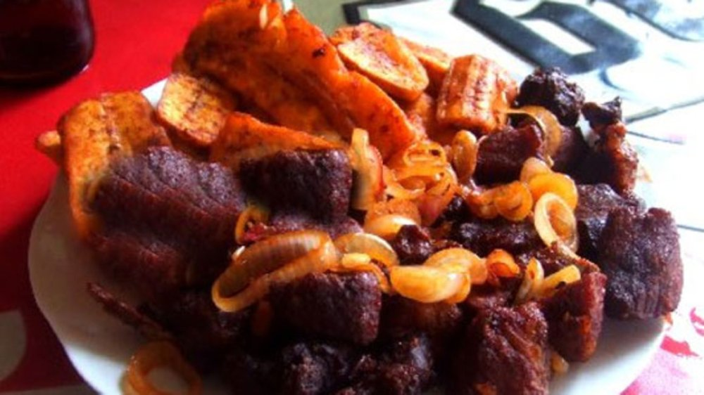

Pork

This is my second favorite food, Chips. Height 300, width, 250!
This Pork, also know as akabenzi is is prepared in in pork meat
.I can get the meat at the local market or super market.
Coution: to be careful not to
cut my self while silicing.
All igredient have to be ready before cooking. the ingredients
oil, salt, black peper, tomatoes, onions to have it delicious.
I also have to prepare all the materials first such as the source-pan
and other relevant materials.
Ingredients
- Salt
- olive oil or any other cooking oil
- Peper
- Onions
- Vineger
Steps
- slicing the pork meat
- wash the meat
- put the meat into the water and cook for 1h
- Removing the meat in the water
- Puting oil on Gaz cooker
- frying the meat
- Cutting Onions and puting them in vineger
- removing the meat from the oil
- Fry the onion, and put the meat into the saucepan
- adding Tomatoes and salt
- When ready put the pork on plate and add the onions from vineger